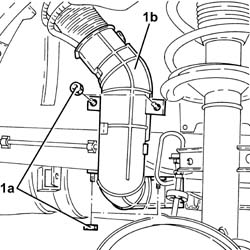
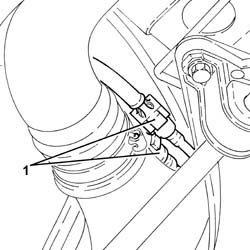
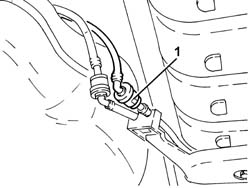
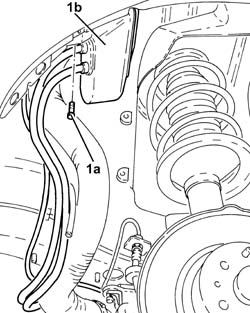

1080E10 TANK FUEL VAPOUR SEPARATOR - R + R
- Path
- Procedures > 10 ENGINE UNIT > 1080 EXHAUST EMISSION CONTROL SYSTEM > 1080E EVAPORATION CONTROL SYSTEM > 1080E10 TANK FUEL VAPOUR SEPARATOR - R + R
- Kind
- repair procedure (removal / refitting; the operation number is the code)
- Applies to
- engines: 1.8 T.SPARK, 2.0 JTS, 3.2 V6; all production periods
- Interactive page
- https://sloeber94.github.io/elrnDB-aGt/en/#/125001139
Applies to: engines: 2.0 JTS; all production periods
 Removing
Removing
 Refitting
RefittingPosition the vehicle on a lift.
Proceed with the removal
Op. 4450B08 RIGHT REAR WHEEL R R.
Proceed with the removal
Op. 7055B45 RIGHT HAND REAR SUPPLEMENTARY WHEEL ARCH - R+R.
1. Undo the nuts (1a) and remove the plastic protection (1b) for the fuel filler pipe after having released it from the fastening bands.

Applies to: engines: 2.0 JTS; all production periods
1. Disconnect the rapid connectors for the fuel vapour recovery pipes from the float valves to the fuel vapour separator.

Applies to: engines: 2.0 JTS; all production periods
1. Disconnect the rapid connector for the fuel vapour supply pipe from the separator to the canister.

Applies to: engines: 2.0 JTS; all production periods
Lower the fuel tank as necessary to release the supply pipe from the fuel vapour separator to the intermediate connector (pipe incorporated in the fuel vapour separator) and remove it.
Op. 1040A10 FUEL TANK - R + R AND DECANT FUEL.
1. Undo the bolts (1a) and remove the fuel tank vapour separator (1b) complete with integrated pipes.

Applies to: engines: 2.0 JTS; all production periods
Refitting
RemovingPlace the fuel tank vapour separator in its housing and secure it using the bolts.
Position the supply pipe from the fuel vapour separator to the intermediate connector on the tank then place the fuel tank in its housing.
Op. 1040A10 FUEL TANK - R + R AND DECANT FUEL.
Connect the rapid connector for the fuel vapour supply pipe from the separator to the canister.
Connect the rapid connectors for the fuel vapour recovery pipes to the float valves to the fuel vapour separator.
Place the plastic protection for the fuel filler pipe in position and secure it using the bands and the nuts.
Proceed with the refitting
Op. 7055B45 RIGHT HAND REAR SUPPLEMENTARY WHEEL ARCH - R+R.
Proceed with the refitting
Op. 4450B08 RIGHT REAR WHEEL R R.
Remove the vehicle from the lift.
Applies to: engines: 3.2 V6; all production periods
Removing
RefittingProceed with the removal
Op. 4450B08 RIGHT REAR WHEEL R R.
Proceed with the removal
Op. 7055B45 RIGHT HAND REAR SUPPLEMENTARY WHEEL ARCH - R+R.
Proceed with the removal
Op. 1040A70 SUBMERGED PUMP ASSEMBLY COMPLETE WITH LEVEL GUAGE CONTROL - R + R.
Proceed with the removal
Op. 1040A30 OIL SEAL COVER, FLY WHEEL SIDE - R + R AND REPLACE SEALS.
Applies to: engines: 3.2 V6; all production periods
Refitting
RemovingProceed with the refitting
Op. 1040A30 OIL SEAL COVER, FLY WHEEL SIDE - R + R AND REPLACE SEALS.
Proceed with the refitting
Op. 1040A70 SUBMERGED PUMP ASSEMBLY COMPLETE WITH LEVEL GUAGE CONTROL - R + R.
Proceed with the refitting
Op. 7055B45 RIGHT HAND REAR SUPPLEMENTARY WHEEL ARCH - R+R.
Proceed with the refitting
Applies to: engines: 1.8 T.SPARK; all production periods
Removing
Refitting- Position the vehicle on a lift.
- Op. 4450B08 RIGHT REAR WHEEL R R
- Op. 7055B45 RIGHT HAND REAR SUPPLEMENTARY WHEEL ARCH - R+R
- Undo the nuts (1a) and remove the plastic protection (1b) for the fuel filler pipe after having released it from the fastening bands.
Applies to: engines: 1.8 T.SPARK; all production periods
- Disconnect the rapid connectors for the fuel vapour recovery pipes from the float valves to the fuel vapour separator.
Applies to: engines: 1.8 T.SPARK; all production periods
- Disconnect the rapid connector for the fuel vapour supply pipe from the separator to the canister.
Applies to: engines: 1.8 T.SPARK; all production periods
- Lower the fuel tank as necessary to release the supply pipe from the fuel vapour separator to the intermediate connector (pipe incorporated in the fuel vapour separator) and remove it.Op. 1040A10 FUEL TANK - R + R AND DECANT FUEL
- Undo the bolts (1a) and remove the fuel tank vapour separator (1b) complete with integrated pipes.
Applies to: engines: 1.8 T.SPARK; all production periods
Refitting
Removing- Place the fuel tank vapour separator in its housing and secure it using the bolts.
- Position the supply pipe from the fuel vapour separator to the intermediate connector on the tank then place the fuel tank in its housing.Op. 1040A10 FUEL TANK - R + R AND DECANT FUEL
- Connect the rapid connector for the fuel vapour supply pipe from the separator to the canister.
- Connect the rapid connectors for the fuel vapour recovery pipes to the float valves to the fuel vapour separator.
- Place the plastic protection for the fuel filler pipe in position and secure it using the bands and the nuts.
- Op. 7055B45 RIGHT HAND REAR SUPPLEMENTARY WHEEL ARCH - R+R
- Op. 4450B08 RIGHT REAR WHEEL R R
- Remove the vehicle from the lift.